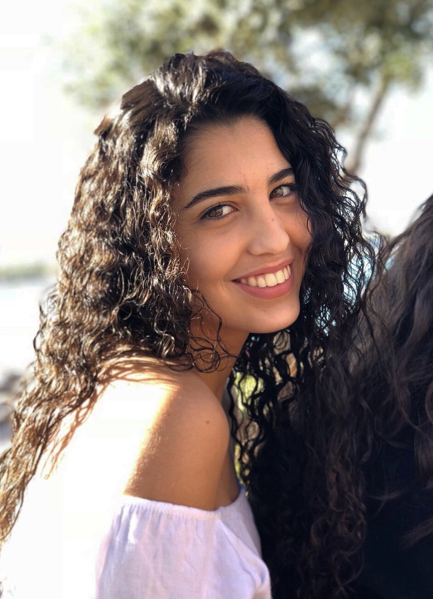

Hello, I’m Salma Tazi👋
Hey, I’m Salma Tazi, a student at HEC Paris who’s as curious about coding as I am about the world around me. Working in private equity gives me a front-row seat to how global business evolves—especially as the internet transforms how we learn, connect, and collaborate. Between crunching numbers and exploring new digital tools, you’ll find me indulging my passions: traveling to discover fresh perspectives, following the high-speed drama of Formula 1, and letting loose through dance. I’m here to learn, experiment, and create something meaningful with each new line of code.
My Passion: Dance
It lies in blending contemporary and classical dance. Each movement offers a chance to express emotions, tell stories, and connect with others—constantly challenging me to evolve, refine, and rediscover myself through the art of movement.
Hobby: Traveling and Photography
I enjoy traveling to unfamiliar places and capturing their essence through photography—playing with light, composition, and perspective to tell stories of the people, cultures, and moments I encounter along the way.

Project: Dog Shelter in Morocco
I'm currently working on establishing a shelter to protect stray dogs from a recent law that allows authorities to euthanize them. Together with my dad, I’ve already started the shelter in Casablanca, and I’m determined to expand this safe haven beyond my home city. It’s still a work in progress, but I’m excited about the potential impact we can make for these animals.